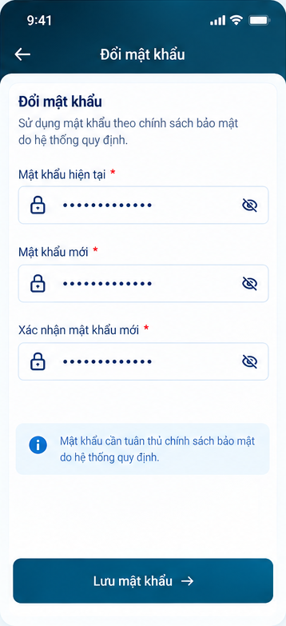
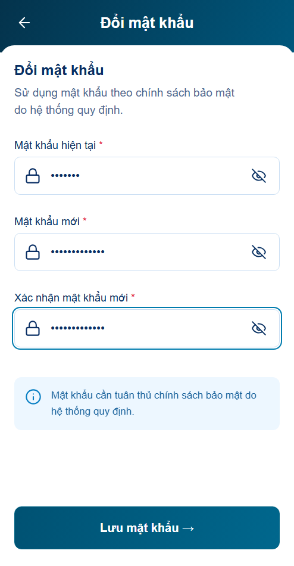
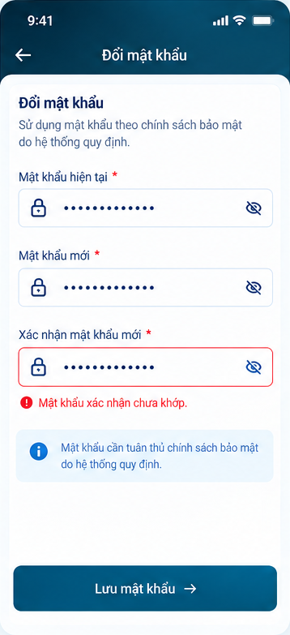
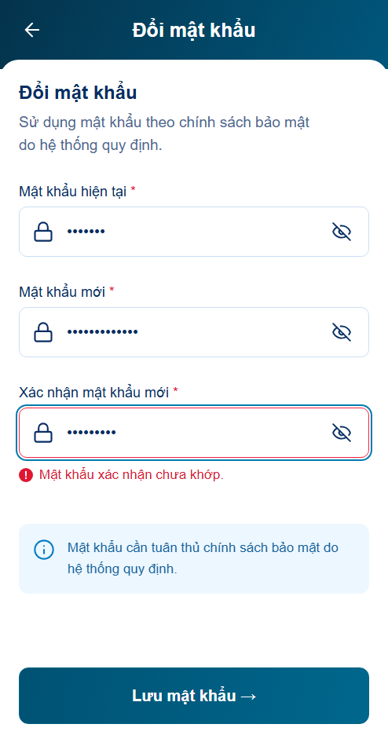
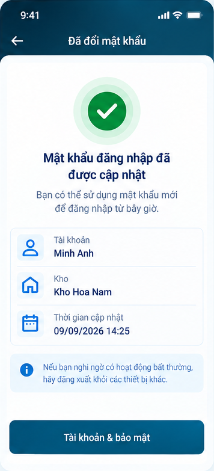
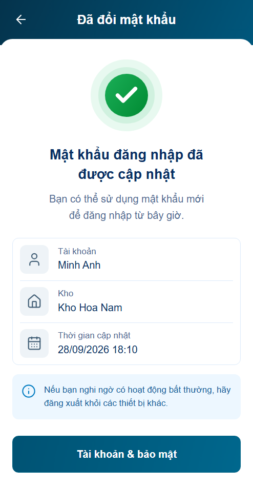
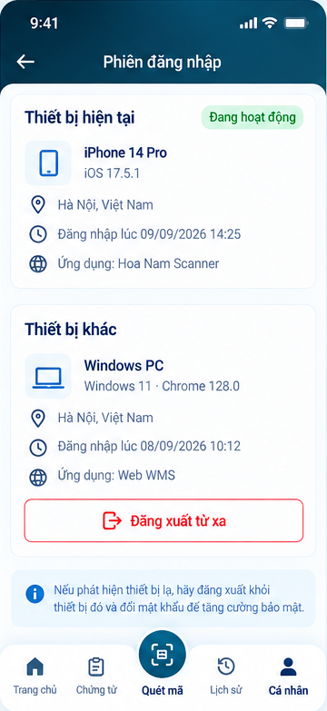
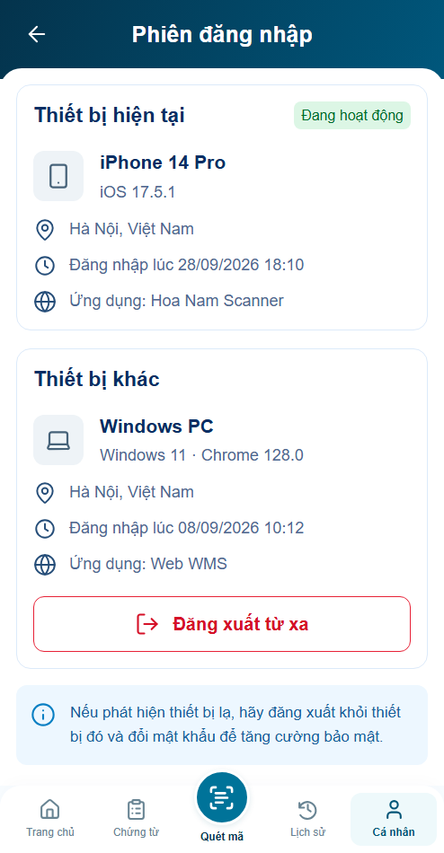

Luồng preview mặc định hoạt động ngay, không cần bật kịch bản. Đổi mật khẩu nối với P01; logout rồi đăng nhập dùng mật khẩu mới. Thu hồi phiên giữ hiệu lực khi rời màn và đăng nhập lại. Mỗi màn hiển thị thông báo đúng thao tác, không kéo lỗi đổi mật khẩu sang danh sách phiên.
Mở app · tài khoản ban đầu minhanh / preview → Cá nhân → Tài khoản & bảo mật.
Dữ liệu thử trong bộ nhớ của trang: logout giữ thay đổi, reload trang hoặc Đặt lại fixture khôi phục dữ liệu ban đầu. Thiết bị/vị trí là mẫu B11, không phải thiết bị thật. Backend production/policy vẫn chưa tích hợp. Kịch bản lỗi và B11 riêng nằm ở công cụ ngoài app.
Behavior: 97/97 ca logic; 73 nhóm browser. Visual chờ nghiệm thu; CSS/layout r01 giữ nguyên, font Designer và pixel match chưa xác minh. 4 panel giữ ID, khung chuẩn 494×950, baseline không kéo méo.
Báo cáo r02 · Bốn panel actual · Kiểm luồng mặc định







